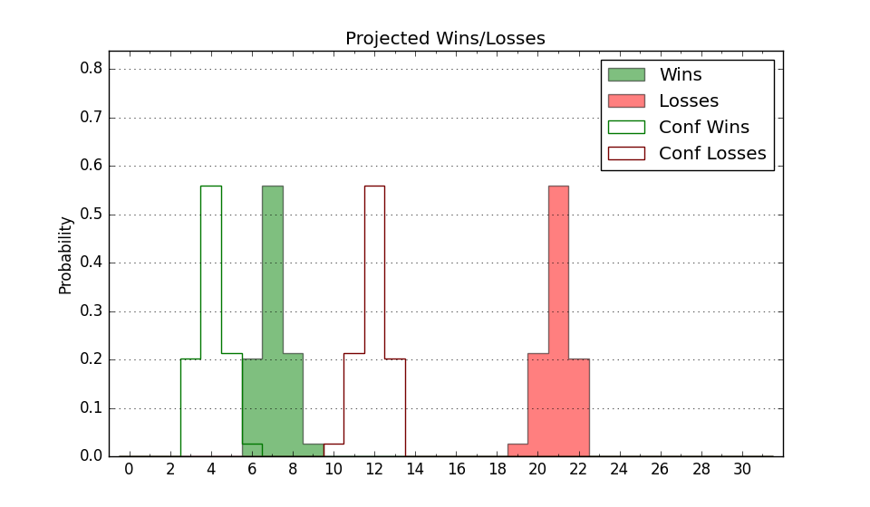

| Home | Game Probabilities | Conferences | Preseason Predictions | Odds Charts | NCAA Tournament |
| City: | Denver, Colorado | |
| Conference: | Summit (8th)
| |
| Record: | 3-10 (Conf) 6-19 (Overall) | |
| Ratings: | Comp.: -13.7 (305th) Net: -13.7 (305th) Off: 98.3 (305th) Def: 112.0 (283rd) SoR: 0.0 (122nd) |
| Remaining | ||||||
|---|---|---|---|---|---|---|
| Date | Opponent | Win Prob | Pred. | |||
| 2/19 | Oral Roberts (319) | 68.9% | W 78-72 | |||
| 2/27 | @ UMKC (227) | 19.3% | L 62-71 | |||
| 3/1 | South Dakota St. (102) | 18.8% | L 69-80 | |||
| Previous | Game Score | |||||
| Date | Opponent | Win Prob | Result | Off | Def | Net |
| 11/4 | @Stanford (87) | 5.0% | L 62-85 | -6.3 | 1.7 | -4.5 |
| 11/12 | @Colorado St. (73) | 3.7% | L 65-74 | 4.9 | 12.9 | 17.8 |
| 11/17 | Montana St. (176) | 34.7% | W 79-78 | -0.7 | 2.5 | 1.8 |
| 11/24 | @Montana (168) | 13.0% | L 73-83 | -1.5 | 8.6 | 7.1 |
| 11/25 | (N) Cal St. Northridge (116) | 14.1% | L 60-89 | -10.7 | -13.5 | -24.1 |
| 11/26 | (N) Dixie St. (270) | 41.7% | L 54-68 | -18.3 | 0.5 | -17.8 |
| 12/1 | @Portland (299) | 33.9% | L 90-101 | -1.2 | -3.3 | -4.5 |
| 12/4 | Sacramento St. (336) | 73.7% | W 80-59 | 20.6 | 1.9 | 22.5 |
| 12/7 | @Portland St. (187) | 14.6% | W 68-67 | 17.7 | 2.3 | 20.0 |
| 12/15 | @Cal St. Fullerton (335) | 44.8% | L 59-74 | -3.1 | -21.9 | -25.0 |
| 12/17 | @Cal Poly (213) | 17.8% | L 94-95 | 12.4 | 5.9 | 18.3 |
| 12/21 | Northern Colorado (136) | 27.7% | L 75-82 | 14.9 | -15.2 | -0.3 |
| 1/2 | @South Dakota St. (102) | 6.4% | L 70-91 | 0.0 | 2.5 | 2.5 |
| 1/4 | @South Dakota (233) | 20.5% | L 84-91 | 8.9 | -6.4 | 2.5 |
| 1/9 | North Dakota (277) | 58.0% | L 70-95 | -13.7 | -24.3 | -38.0 |
| 1/11 | North Dakota St. (127) | 25.4% | L 50-69 | -26.9 | 3.5 | -23.4 |
| 1/15 | Nebraska Omaha (190) | 38.1% | L 62-80 | -6.8 | -14.0 | -20.8 |
| 1/18 | @St. Thomas MN (110) | 7.6% | L 62-74 | -8.9 | 12.8 | 3.9 |
| 1/23 | @Oral Roberts (319) | 39.4% | W 70-68 | 2.7 | 9.0 | 11.7 |
| 1/30 | UMKC (227) | 44.8% | W 69-68 | 5.3 | 1.0 | 6.2 |
| 2/1 | @Nebraska Omaha (190) | 15.3% | L 69-78 | 4.9 | 1.4 | 6.3 |
| 2/6 | South Dakota (233) | 46.8% | L 79-86 | -11.8 | -3.1 | -14.9 |
| 2/8 | St. Thomas MN (110) | 21.9% | L 76-79 | 13.2 | -7.0 | 6.2 |
| 2/13 | @North Dakota (277) | 28.8% | W 68-64 | -13.5 | 28.5 | 15.0 |
| 2/15 | @North Dakota St. (127) | 9.1% | L 84-89 | 11.8 | 8.7 | 20.5 |
| Stats & Trends | |||||
|---|---|---|---|---|---|
| Current | Day | Week | Month | Season | |
| Composite | -13.7 | +0.0 | +1.8 | +3.2 | -1.2 |
| Comp Rank | 305 | +1 | +11 | +25 | -2 |
| Net Efficiency | -13.7 | +0.0 | +1.9 | +3.6 | -- |
| Net Rank | 305 | +1 | +12 | +26 | -- |
| Off Efficiency | 98.3 | +0.0 | -0.0 | +0.1 | -- |
| Off Rank | 305 | -- | -4 | -15 | -- |
| Def Efficiency | 112.0 | +0.0 | +1.9 | +3.5 | -- |
| Def Rank | 283 | +1 | +28 | +51 | -- |
| SoS Rank | 190 | -- | +26 | +39 | -- |
| Exp. Wins | 7.1 | +0.0 | +0.8 | +1.4 | -3.5 |
| Exp. Conf Wins | 4.1 | +0.0 | +0.8 | +1.4 | -2.4 |
| Conf Champ Prob | 0.0 | -- | -- | -- | -4.6 |

| Advanced Stats | ||
|---|---|---|
| Stat | Value | Rank |
| Off Eff FG % | 0.485 | 257 |
| Off Ast Ratio | 0.125 | 310 |
| Off ORB% | 0.248 | 279 |
| Off TO Rate | 0.171 | 324 |
| Off FT Ratio | 0.294 | 279 |
| Def Eff FG % | 0.544 | 303 |
| Def Ast Ratio | 0.143 | 148 |
| Def ORB% | 0.295 | 213 |
| Def TO Rate | 0.150 | 152 |
| Def FT Ratio | 0.508 | 363 |